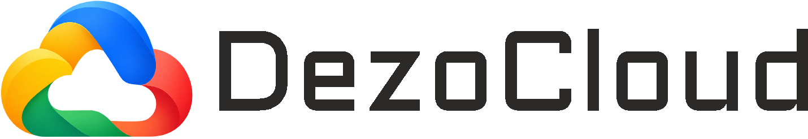

Maxfiylik siyosati
Oxirgi yangilanish: 2026-yil oktyabr
DezoCloud — surat va videolarni saqlash xizmati. Bu sahifada qanday ma'lumot yig'ilishi, nimaga ishlatilishi va qanday himoyalanishi yozilgan.
Qanday ma'lumot yig'iladi
- Hisob ma'lumotlari: login, pochta manzili (agar Google, Microsoft, Facebook, Yandex yoki pochta kodi bilan kirgan bo'lsangiz) va kirish usulining ichki identifikatori. Parolingiz faqat qaytarib bo'lmaydigan (xeshlangan) ko'rinishda saqlanadi.
- Siz yuklagan fayllar: surat va videolar, ularning nomi, hajmi, o'lchami, olingan vaqti. Suratda joylashuv (GPS) ma'lumoti bo'lsa, u ham saqlanadi va faqat sizga ko'rinadi.
- Texnik ma'lumot: xavfsizlik uchun IP manzil va kirish urinishlari qisqa muddat serverda saqlanadi.
Google, Microsoft, Facebook yoki Yandex orqali kirganingizda biz faqat ismingiz (yoki logini), pochta manzilingiz va hisob identifikatorini olamiz. Parolingizni va boshqa ma'lumotlaringizni olmaymiz.
Fayllar qayerda saqlanadi
Fayllaringiz shifrlangan (AES-256) holda maxfiy Telegram kanalida saqlanadi. Shifrlash kaliti xizmat serverida turadi. Fayllaringizni boshqa foydalanuvchilar ko'ra olmaydi. Faqat siz yaratgan ulashish havolasi orqali ochiladi.
Ma'lumotdan qanday foydalanamiz
- Hisobingizni yuritish, fayllarni ko'rsatish va saqlash uchun.
- Xavfsizlik uchun (suiiste'molni va tanlab parol terishni to'xtatish).
Ma'lumotlaringizni sotmaymiz, reklama uchun ishlatmaymiz va uchinchi tomonga bermaymiz, qonun talab qilgan hollar bundan mustasno.
O'chirish
Faylni savatchaga tashlasangiz, 30 kundan keyin butunlay o'chiriladi (yoki savatchani o'zingiz bo'shatishingiz mumkin). Hisobingizni va barcha fayllaringizni o'chirishni so'rash uchun biz bilan bog'laning.
Bog'lanish
Savollar va so'rovlar uchun: xizmat administratori.